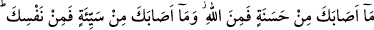
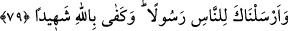

de” ey Muhammed, “Bu senden” Bu belâ, sırf senin uğursuzluğun yüzündendir
“derler.” Nitekim yahûdîler: “Muhammed, Medîne’ye geldiğinden beri Medîne’nin
mahsûlü azaldı, fiyatlar arttı” demişlerdi.
Bütün bu iyilik ve kötülüklerin “hepsi Allah’tandır” de. İrâdesine göre bollaştırır ve
daraltır. “Bu adamlara” bu yahûdî ve münâfıklara “ne oluyor ki bir türlü laf
anlamıyorlar!” Bunlar hangi hastalığa yakalandılar ki hayvanlar gibi Allah’tan gelen
hiç bir sözü anlamaya yanaşmıyorlar. Anlasalardı, her şeyin Allah tarafından olduğunu
da bilirlerdi. “Fıkh,” anlamak demektir. Sonra ıstılâh olarak sâdece fetvâ ilmine mahsus
bir ad olmuştur.
“Ey hevâları galip gelen, dünyâ kendilerine sevdirilerek Mevlâ’yı istemekten geri
bırakan, sonra da dünyâ hayâtına tâlib olan tembeller! “Nerede olursanız olun” kendi
ihtiyârınızla ölmeden evvel ölmezseniz “ölüm size” ıztırârî bir şekilde “ulaşır.” “sarp
ve sağlam kalelerde” çok güçlü olan mücessem cesedlerde “olsanız bile!”
Allah bizi de, sizi de fenâ ve bekanın hakîkatine ulaştırsın. Âmin.
79- Sana gelen iyilik Allah’tandır. Başına gelen kötülük ise nefsindendir. Seni
insanlara elçi gönderdik; şahit olarak da Allah yeter.
Ey insan “sana gelen” hayır ve nîmet gibi her “iyilik” O’nun ihsânı olarak
“Allah’tandır.” Çünkü insanın yaptığı bütün ibâdet ve tâatler, var oluş nîmetini bile
karşılamazken diğer nîmetleri nasıl karşılasın. Bu sebepledir ki Hz. Peygamber (a.s)
şöyle buyurmuştur: “Allah’ın rahmeti olmaksızın, hiç kimse cennete giremez.” “Sen de
mi, ey Allah’ın Rasûlü” diye sorulunca, “Evet ben de, ancak Allah’ın rahmetinin beni
kuşatması sâyesinde cennete girebileceğim.” şeklinde cevap vermiştir.[85]
“Başına gelen” belâ ve hoşlanmadığın şeyler gibi her “kötülük ise nefsindendir.”
Çünkü seni masiyetlere çektiği için kötülüğün sebebi, nefsindir. Bu durum, yukarıdaki
“Her şey Allah’tandır” âyetine ters değildir. Çünkü yaratıp ulaştırma bakımından her
şey Allah’tandır. Şu kadar var ki iyilik, ihsan ve nîmetlendirme; kötülük ise
cezâlandırıp intikam almadır. Nitekim Hz. Âişe (r.a)’dan şöyle rivâyet edilmiştir:
“Hiçbir müslüman yoktur ki başına gelen hastalık, üzüntü, hattâ kendisine batan
bir diken, ayakkabısının tasmasının kopması bile işlediği bir günah yüzünden
olmasın. Allah’ın bağışladığı günahlar da çoktur.”[86]
Bil ki amellerin dört mertebesi vardır: İkisi sâdece Allah’a âit olup kulun bunlarda
hiç bir tesiri yoktur. Bunlar, takdîr etme ve yaratmadır. Diğer ikisi de kula âit olup kesb
(kazanma) ve fiildir. Allah Teâlâ kesb ve kötü fiilden münezzehtir. Fakat hem kul, hem
de kulun kesbi, Allah’ın yarattığı mahluklardır. Nitekim Allah Teâlâ “Allah sizi de
yaptıklarınızı da yaratmıştır” (es-Sâffât, 37/96) buyurmuştur.